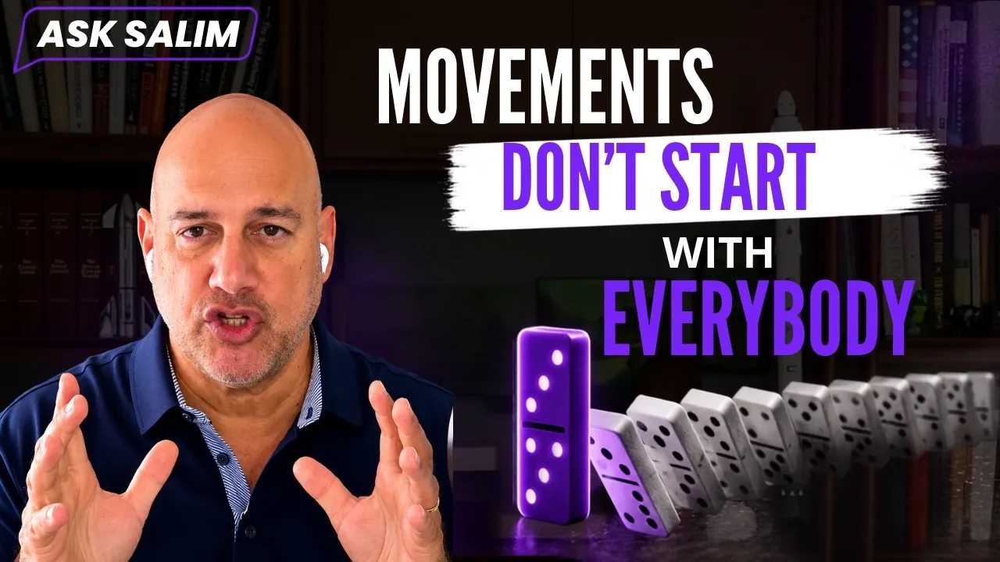

Key insights and concrete takeaways from the conversations that matter — the world's best operators, writers, and thinkers, processed and summarized so you can use them today.
Every entry is a fully self-contained page built from the source conversation — transcripts processed, key ideas extracted, and turned into actions you can take immediately.
Why "never quit" is wrong, the hidden "but" that keeps you stuck, the Dip vs. the cul-de-sac, and a concrete 6-step ritual to unknot any situation — before AI makes the choice for you.
Read the notes
YouTube → NotesWhy top-down change gets killed by the organization's immune system, the "power of pull," and three moves to make a new workflow 10x better so people abandon the old one on their own.
Read the notesFuture insights pages will appear here as they're published. The library grows one conversation at a time.